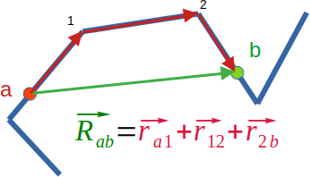

Home
All SEB tutorials
Tutorial: Derivation of form factor of a chain of rods
Contributors: Carsten Svaneborg (FKF SDU).

Illustration of a semi-flexible polymer molecule as a chain of rods.
Before you start
- Download and install Scattering Equation Builder (SEB)
- Complete the polymer tutorial to understand how SEB works and how to derive the scattering from a Gaussian polymer model.
- Complete the rod tutorial to understand how to derive the scattering from a rod.
Learning outcomes
In this tutorial you will learn how to calculate the scattering from semi-flexible polymers, in particular- how to derive the form factor of a random-walk chain of rods,
- how to derive the form factor of generic A-B and A-B-C structures,
- and how to use SEB to derive the form factor of these structures.
Semi-flexible polymers
In the preceeding polymer tutorial we looked at Gaussian polymer models. That is we approximate a polymer as a random walk fractals on all length scales. These models accurately describe the large spatial scale / low $q$ behaviour of polymers, but fail towards the molecular scales where the molecule is locally rod-like.
Here we want to derive the scattering from a random walk model with a finite number of steps $N$ and each step being a rod of length $b$. In the polymer and rod tutorials we calculated the form factor using pairs of scatterers within a polymer or rod. We will now change perspective and think of a structure built by connecting units. A single unit can contain many scatterers and they can have different internal conformations. Assuming we can calculate the scattering from a unit, what is then the scattering from a structure?
More rod scattering
In the rod tutorial we derived the form factor of a rod. The starting point was the Debye formula:
$$F(q) = \left<\frac{\sin(q r)}{qr} \right>_P, $$
The probability $P$ denotes the probability of two random scatterers on a straight line being a distance $r$ apart. We randomly pick one scatterer from an uniform distribution in the interval $[0,b]$. Thus $P(x_1)=1/b$ for $x_1\in [0,b]$ and zero elsewhere. This corresponds to the integral $ \int_0^b \frac{dx_1}{b} \cdots$. We pick the second scatterer $x_2$ from the same distribution, and with these two scatterers the distance between them is $r=|x_1-x_2|$, because the rod is straight. Thus we needed to take the following integrals to derive the form factor of a rod:
$$ F(q) = \int_0^b \frac{dx_1}{b} \int_0^b \frac{dx_2}{b} \frac{\sin(q |x_1-x_2|)}{q|x_1-x_2|},$$
The result is $F(q)=2(\cos(x)-1+x Si(x))/x^2$ where $x=qb$ and $Si(x)=\int_0^x dt sin(t)/t$ is the sin integral function.
The form factor is derived from picking a random pair of scatterers on the rod. For the sake of the argument, we could ask how the end at $x_1=0$ interferes with all other scatterers along the rod. We denote this the form factor amplitude of a rod relative to its end. It is given by:
$$A(q)= \left<\frac{\sin(q r)}{qr} \right>_{P_e},$$ where $P_e(r)$ is the probability if a distance $r$ between any scatterer and the end of the rod. In analogy with the form factor, it can be expressed as the integral:
$$ = \int_0^b \frac{dx_2}{b} \frac{\sin(q |0-x_2|)}{q|0-x_2|},$$
and since $|0-x_2|=x_2$ after a variable substitution, we immediately get the result $A(q)=Si(x)/x$. We get the exactly same result, if we fixed $x_2=b$ and picked random uniformly distributed $x_1$ scatterers.We could also ask what is the contribution to the scattering between the two ends of the rod? This term we denote a phase factor because it describes the phase difference introduced due to a certain spacing. The Debye formula is: $$\Psi(q)= \left<\frac{\sin(q r)}{qr} \right>_{P_{ee}},$$ where the probability distribution $P_{ee}(r)$ is the probability of the distance $r$ between the two ends of the rod. But this corresponds to fixing $x_1=0$ and $x_2=b$. Thus $r=|0-b|=b$ and taking the average is an integral over the Dirac delta distribution $P_{ee}(r)=\delta(r-b)$, which is the same as inserting $r=b$ in the Debye formula. The result is: $$ \Psi(q) = \frac{\sin(x)}{x}.$$
To summarise: The form factor as the Fourier transform of the distance distribution between all pairs of scatterers, the form factor amplitude is the Fourier transform of the distance distribution between all scatterers and a specific reference point such as the end, and finally the phase factor is the Fourier transform of the distance distribution between pairs of reference points such as the two ends of a rod. Since the probabilities are normalized, the three functions converge to $1$ for $q\rightarrow0$.
Form factor of a chain
The form factor depends on the distribution of distances between pairs of scatterers, but there are now two possibilities: 1) the pair of scatterers could be in the same rod section, or 2) they could be on different rods sections possibly far apart on the chain. The first case just produce a rod form factor, which we already derived, but we will derive the result for the latter case. To simplify matters, we will derive it for the special case illustrated here:

Illustration of two scatterers $a,b$ being located on two different rods. The vector between the two scatterers (black) can be "projected" onto the chain by breaking it into distinct steps (red) along the chain.
Remember the two scatterers were picked randomly, and all the steps of the random walk are assumed to be random and statististically independent. Hence what we are interested in is the probability $P(\vec R_{ab})$ between all the scatterers on these two rods. Due to the sum we can write $$P(\vec R_{ab}) =\int d \vec r_{a1} d \vec r_{12} d \vec r_{2b} P_e(\vec r_{a1}) P_{ee}(\vec r_{12}) P_e(\vec r_{2b}) \delta(\vec R_{ab}-(\vec r_{a1}+\vec r_{12}+\vec r_{2b})) ,$$ essentially with the integrals we try all possible combinations of vectors $\vec r_{a1}, \vec r_{12}, $ and $\vec r_{2b}$ weighted by their probabilities, but only count the result with the Dirac delta function, if the integrants add up to the vector $\vec R_{ab}$. Below it will be important that this is a exactly the convolution of the three distributions.
From a physics perspective, the first distribution $P_e(\vec r_{a1})$ describes the step from a scatterer $a$ to the end of the rod. The second distribution $P_{ee}(\vec r_{12})$ describes the step from one end of the rod to the other end. The third and final distribution $P_e(\vec r_{2b})$ describes the step from the end of the rod to the scatterer $b$. Because the chain of rods can rotate freely in the solution, all these distributions can only depend on the length of the vectors not their direction.
The contribution to the form factor for the rods shown on the figure is thus $$ \left<\frac{\sin(q r)}{qr} \right>_P $$ but the resulting integrals will be a spherically-symmetric Fourier transformation of a convolution. The Fourier convolution theorem tells us that this is just the product of the Fourier transforms of the individual distributions: $$ = \left<\frac{\sin(q r)}{qr} \right>_{P_{e}} \left<\frac{\sin(q r)}{qr} \right>_{P_{ee}} \left<\frac{\sin(q r)}{qr} \right>_{P_{e}},$$ but these were exactly the terms, that we calculated above, hence the result is $$ = A(q) \Psi(q) A(q).$$
For the example above, we had a single rod between the two rods on which we had the scatterers. If the two scatterers was in neighboring rods, the scattering contribution would be $A^2$. If instead we had $n$ rods between the two scatterers, the logic above still is true, but the result would have been $A^2(q) \Psi(q)^n$. The assumption we made along the way were that all steps are statistically independent, since otherwise we can not factor the probability into products of probabilities for individual units, and we assumed the chain is in solvent and can rotate freely in space.
Putting it together: To account for all the possibilities positions of the scatterers in a chain of $N$ rods, lets $i$ and $j$ in $1,..,N$ denote the rods with the scatterers. We have to sum over all the $N^2$ combinations to calculate the form factor of the chain. The easiest way to think of the combinations is of to put them in $N$x$N$ matrix. There are $N$ combinations where $i=j$ (the diagonal) and they contributute a form factor $F(q)$ each. There are $2(N-1)$ combinations where $|i-j|=1$ (above and below the diagonal), thus the two scatterers are in a pair of rods that are directly connected. Such a combination contribute $A(q)^2$. There are $2(N-2)$ combinations where $|i-j|=2$, this is the case we looked at above, and they contribute $A(q)^2 \Psi(q)$. There are $2(N-3)$ combinations with $|i-j|=3$ and their contribution is $A^2 \Psi^2$. This pattern continues until we get to the final $2$ combinations with $|i-j|=N-1$. These two are $i=1,j=N$ and $j=1,i=N$ (thus the top right and bottom left element of the matrix), which corresponds to the two scatterers being in the first and last rod in the chain. Their contribution is $A(q)^2 \Psi^{N-2}$. Denoting $|i-j|$ by $k$ the normalized sum of all the scattering contributions can be written:
$$ F_{chain}(q)=\frac{1}{N^2}\left( N F(q) + 2 A^2(q) \sum_{k=1}^{N-1}(N-k)\Psi^{(k-1)}(q)\right)$$
We could plug in the $F,A,\Psi$ expressions for a rod to produce the final result for a chain of rods, but where in the derivation of this expression did we depend on the fact that the units in the chain were rods? Absolutely nowhere! Hence the result is equally true for any chain of identical units, as long as these units are connected by flexible joints and can be considered as being mutually non-interacting. If this was not the case, then the probability distribution of the step vectors would not be statisticaly independent, and hence hence our factorization into probability distributions of individual steps would fail.
More polymer scattering
In the polymer tutorial we derived the form factor of a polymer. We can easily derive the form factor amplitude and phase factor of a polymer as well. Continuing with the notation for a polymer, the form factor between an end $n_1=0$ and a scatterer at $n_2$ is separated by $n=|0-n_2|=n_2$, thus the average we have to perform can be expressed as the integral: $$ A(q) = \int_0^N \frac{dn_1}{N} \int_0^\infty dr 4\pi r^2 \left(\frac{3}{2\pi b^2 n_2}\right)^{3/2} \exp\left(- \frac{3 r^2}{2 b^2 n_2} \right) \frac{\sin(q r)}{qr},$$ $$=\frac{exp(-y)-1}{y},$$ with $y=q^2 R_g^2$ as before for polymers. We use $y$ here since $x$ was already defined above for rods. Notice that scattering expressions always depends on dimensionless terms involving $q$ and a length scale of the unit in question.
To calculate the phase factor of a polymer, we fix $n_1=0$ and $n_2=N$ and thus $n=|n_1-n_2|=N$. The only integral we have to perform is that of the Gaussian distribution between the ends of the polymer: $$ \psi(q) = \int_0^\infty dr 4\pi r^2 \left(\frac{3}{2\pi b^2 N}\right)^{3/2} \exp\left(- \frac{3 r^2}{2 b^2 N} \right) \frac{\sin(q r)}{qr},$$ $$=exp(-y).$$
Summary so far
Faced with the task of calculating the form factor (subject to assumptions above) of some structure like a chain, consider each unit and calculate $F,A,\Psi$ functions for it.
- In total, there are $N^2$ ways of distributing pairs of scatterers in pairs of units.
- Of those $N$ are form factor contributions $F$ when the pair of scatterers belong to the same unit.
- Each interference contribution comes twice because we can flip the pair of scatterers between the units. Hence there are $(N^2-N)/2$ potentially different interference contributions.
- Each interference contribution has the generic form $A (\prod \Psi ) A$ where the two units containing the scatterers contribute a form factor amplitude factor, and each unit that connects the two units with the scatterers contribute a phase factor each.
- 1a: Write down $F_{chain}$ in the special case of a chain of two identical units. (optional: do it for $N=3$ as well).
- 1b: Draw a sketch an A-B structure of two different rods A-B. Sketch the four ways you can distribute two scatterers. Based on the sketch, can you write down an expression for the form factor? (hint express it with the unknown functions $F_A,F_B,A_A,A_B$)
- 1c: Draw a sketch of with three connected rods A-B-C. Sketch the 9 ways you can distribute two scatterers. Can you write down an expression for the form factor? (hint express it with the unknown functions $F_A,F_B,F_C,A_A,A_B,A_C,\Psi_B$)
- 1d: Optional: So far we have neglected scattering lengths, since this does not matter for the chain expression above. If A,B,C above are different units, they can have different scattering lengths. Denoting by $\beta_A$ the scattering length of A, then the form factor changes as $F_A\rightarrow \beta_A^2 F_A$ and form factor amplitudes as $A_A\rightarrow \beta_A A_A$, phase factors are unaffected. Can you modify your expression in 1bc to account for different scattering lengths? (Hint don't forget the normalization constant)
- w.Add(new TYPEOFUNIT(), "NEWNAME");
- w.Add(new TYPEOFUNIT(), "NEWNAME", "TAG");
- w.Link(new TYPEOFUNIT(), "NEWNAME.REF", "EXISTINGNAME.REF" );
- w.Link(new TYPEOFUNIT(), "NEWNAME.REF", "EXISTINGNAME.REF", "TAG");
- Add() adds a new unit to an empty world.
- Link() adds a new subunit and links it to an existing sub-unit in the world.
- TYPEOFUNIT has to be a type known by SEB. E.g. GaussianPolymer or ThinRod.
- NEWNAME is a string defining the name of the unit that is added. All units are required to have a unique name.
- EXISTINGNAME is the name of the sub-unit we want to link the new unit to. Hence it has to exist in the world already.
- REF is the name of a reference point. Different types of units have hardcoded reference names. GaussianPolymer and ThinRod has "end1" and "end2" as their reference points.
- TAG marks one, several or all units as being the same. Default is that TAG=NEWNAME, meaning that SEB will assume all units in a chain are distinct. For a chain of identical units, it would make sense to tag all units with the same tag, in which case the scattering equation is automatically simplified.
- Polymer: TYPEOFUNIT=GaussianPolymer and REF can be "end1" or "end2".
- Rod: TYPEOFUNIT=ThinRod and REF can be "end1" or "end2".
- 2a: Run the program above. (see the polymer tutorial for how) Does the generic expression for the form factor match the one you made in exercise 1a?
- 2b: Remove the tag "rod" from the code above, such that you get the equations for arbitrary A and B units. Rerun the program. What how did the generic expression for the form factor change compared to 2a? Compare the form factor to your result of exercise 1b.
- 2c: Change the program to build an A-B-C structure. Compare the form factor expression to your result from exercise 1c.
- 3a: Change the program to calculate the form factor of a rod linked to a polymer. Evaluate the form factor when the rod and polymer has the same radius of gyration but plot the form factor for different choices of the scattering lengths.
Exercise 1 (theoretical)
Scattering Equation Builder (SEB)
Scattering Equation Builder (SEB) is a C++ library for analytical derivation of form factors of complex structures. SEB is based on the logic presented above, but generalized to arbitrary graph structures built by connecting different types of sub-units where each sub-unit has several options for its reference points. Thus SEB can analytically derive the chain expression above and its generalisations.
Before you can use SEB you need to install a working C++ compiler, the GiNaC, GSL and CLN libraries, and the SEB source code itself. See GitHub for the details of how to install SEB on various operating system. Important you need to remember the folder, where you put the SEB source code. It has a subfolder "work" where you can save and compile your own programs.
SEB has two methods to add units to the world that can be used in four ways:
The possible options for TYPEOFUNIT and REF are hardcoded in SEB, whereas you can use arbitrary sub-unit names and tags. Here you need to know:
Exercise 2
To calculate the form factor of a A-B structure, cut'n'paste the following C++ program into an text editor (e.g. notepad). Save it as "StructureAB.cpp" in the work folder under the SEB installation.
// Include SEB functionality #include "SEB.hpp" int main() { // Create world of sub-units World w("World"); // Add a single rod named "A", tag it "rod" GraphID s = w.Add(new ThinRod(), "A", "rod"); // Add another rod named "B", link B.end1 to the A.end2, tag it "rod" w.Link(new ThinRod(), "B.end1", "A.end2", "rod" ); // Wrap it a structure named Structure w.Add(s, "Structure"); // FormFactorGeneric returns the FF of the structure, but // without inserting expressions for the sub-units. ex F=w.FormFactorGeneric("Structure"); cout << "Form Factor= " << F << endl << endl; }
Illustration of a the A-B structure and its linkage. Compare to the code above.Note: SEB is very explicit about where the references goes e.g. $A_{B:end1}$ denotes the form factor amplitude of unit B relative to the reference point "end1", whereas $\psi_{B:end1,end2}$ denotes a phase factor between the ends. This level of detail is due to the fact that SEB does not assume that the units are symmetric wrt. the ends, or that different units could have the same scattering expressions. It also includes all the scattering lengths of the units in the structure.
Exercise 3 (optional)
In the following exercise, you will generate predictions for form factors of AB structures. You should already have done the Polymer and Rod tutorials to see how to set parameters and evaluate equations to produce files.
Home
All SEB tutorials